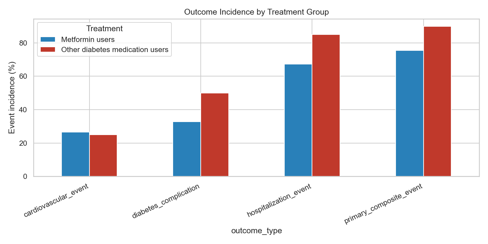
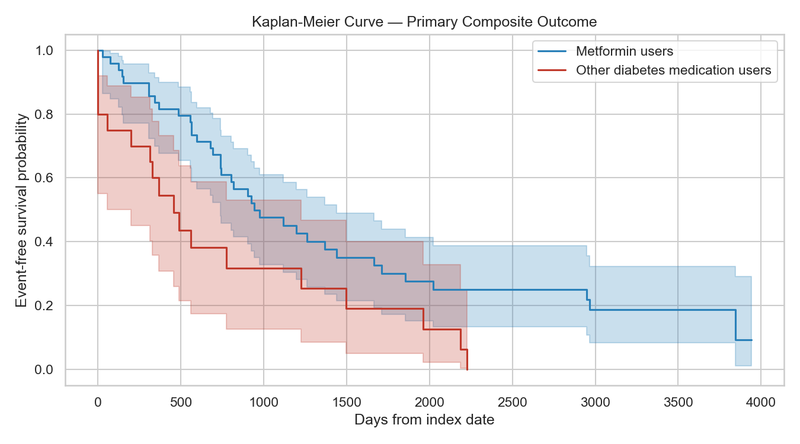
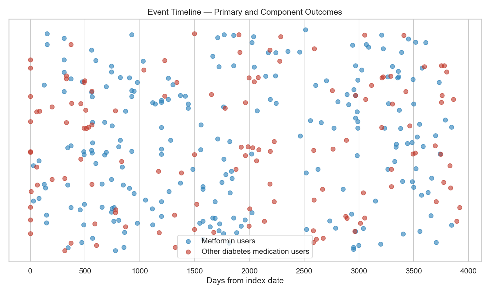

Step 5 — Synthetic RWE Diabetes Treatment Study
Metformin users (n=49) vs Other diabetes medication users (n=20)
Adult T2DM patients from Step 2 cohort assigned to metformin or other diabetes medication at index date. Total analytic N = 69.
Follow-up begins at index_date (first diabetes medication) and ends at the latest available clinical record (conditions, encounters, observations, medications) or death.
Mean follow-up: 3020 days (99.2 months)
| outcome_type | treatment_group | n_patients | n_events | event_percentage | person_years | events_per_100_patient_years |
|---|---|---|---|---|---|---|
| cardiovascular_event | Metformin users | 49 | 13 | 26.5 | 414.74 | 3.13 |
| cardiovascular_event | Other diabetes medication users | 20 | 5 | 25.0 | 155.86 | 3.21 |
| cardiovascular_event | Overall | 69 | 18 | 26.1 | 570.60 | 3.15 |
| diabetes_complication | Metformin users | 49 | 16 | 32.7 | 414.74 | 3.86 |
| diabetes_complication | Other diabetes medication users | 20 | 10 | 50.0 | 155.86 | 6.42 |
| diabetes_complication | Overall | 69 | 26 | 37.7 | 570.60 | 4.56 |
| diabetic_nephropathy | Metformin users | 49 | 11 | 22.4 | 414.74 | 2.65 |
| diabetic_nephropathy | Other diabetes medication users | 20 | 10 | 50.0 | 155.86 | 6.42 |
| diabetic_nephropathy | Overall | 69 | 21 | 30.4 | 570.60 | 3.68 |
| diabetic_neuropathy | Metformin users | 49 | 3 | 6.1 | 414.74 | 0.72 |
| diabetic_neuropathy | Other diabetes medication users | 20 | 0 | 0.0 | 155.86 | 0.00 |
| diabetic_neuropathy | Overall | 69 | 3 | 4.3 | 570.60 | 0.53 |
| diabetic_retinopathy | Metformin users | 49 | 1 | 2.0 | 414.74 | 0.24 |
| diabetic_retinopathy | Other diabetes medication users | 20 | 0 | 0.0 | 155.86 | 0.00 |
| diabetic_retinopathy | Overall | 69 | 1 | 1.4 | 570.60 | 0.18 |
| hospitalization_event | Metformin users | 49 | 33 | 67.3 | 414.74 | 7.96 |
| hospitalization_event | Other diabetes medication users | 20 | 17 | 85.0 | 155.86 | 10.91 |
| hospitalization_event | Overall | 69 | 50 | 72.5 | 570.60 | 8.76 |
| primary_composite_event | Metformin users | 49 | 37 | 75.5 | 414.74 | 8.92 |
| primary_composite_event | Other diabetes medication users | 20 | 18 | 90.0 | 155.86 | 11.55 |
| primary_composite_event | Overall | 69 | 55 | 79.7 | 570.60 | 9.64 |
| medication_change | Metformin users | 49 | 48 | 98.0 | 414.74 | 11.57 |
| medication_change | Other diabetes medication users | 20 | 16 | 80.0 | 155.86 | 10.27 |
| medication_change | Overall | 69 | 64 | 92.8 | 570.60 | 11.22 |
| disease_progression | Metformin users | 49 | 4 | 8.2 | 414.74 | 0.96 |
| disease_progression | Other diabetes medication users | 20 | 1 | 5.0 | 155.86 | 0.64 |
| disease_progression | Overall | 69 | 5 | 7.2 | 570.60 | 0.88 |
| high_encounter_utilization | Metformin users | 49 | 34 | 69.4 | 414.74 | 8.20 |
| high_encounter_utilization | Other diabetes medication users | 20 | 16 | 80.0 | 155.86 | 10.27 |
| high_encounter_utilization | Overall | 69 | 50 | 72.5 | 570.60 | 8.76 |
| treatment_group | n | n_events | median_event_free_days |
|---|---|---|---|
| Metformin users | 49 | 37 | 945.0 |
| Other diabetes medication users | 20 | 18 | 459.0 |
Log-rank test: statistic = 6.614, p = 0.0101
Median event-free time — Metformin: 945 days; Other: 459 days
Unadjusted model: Outcome ~ Treatment group (Other vs Metformin)
| outcome_type | odds_ratio | ci_lower | ci_upper | p_value | n | n_events | model |
|---|---|---|---|---|---|---|---|
| primary_composite_event | 2.919 | 0.590 | 14.449 | 0.1893 | 69 | 55 | Logistic regression (unadjusted) |
| diabetes_complication | 2.062 | 0.714 | 5.956 | 0.1810 | 69 | 26 | Logistic regression (unadjusted) |
| cardiovascular_event | 0.923 | 0.280 | 3.048 | 0.8955 | 69 | 18 | Logistic regression (unadjusted) |
| hospitalization_event | 2.747 | 0.702 | 10.757 | 0.1467 | 69 | 50 | Logistic regression (unadjusted) |
Interpretation: These results represent unadjusted associations. Potential confounding factors (e.g., age, comorbidity burden) should be addressed using causal inference methods such as propensity score weighting or doubly robust estimation in subsequent analysis.



Interpretation: These results represent unadjusted associations. Potential confounding factors (e.g., age, comorbidity burden) should be addressed using causal inference methods such as propensity score weighting or doubly robust estimation in subsequent analysis.